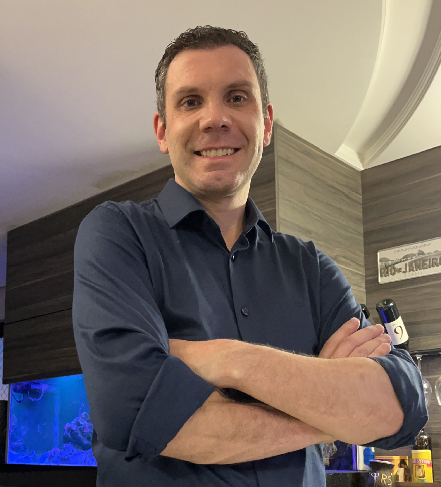

Experiências Profissionais
-
Empresa: Autônomo;
Cargo: Desenvolvedor Full-stack;
Período trabalhado: 06/2024 até atual;
Descrição do cargo: Estudante Full-stack e desenvolvendo projetos pessoais integrando front-end(CSS e HTML) com back-end(Python, PHP e JavaScript).
-
Empresa: KSP Indústria de máquinas LTDA;
Cargo: Torneiro mecânico – montador de máquinas - inspetor de qualidade;
Período trabalhado: 10/2023 até 06/2024;
Descrição do cargo: Ajustes e fabricação de peças em torno, montagem de conjuntos, subconjuntos e inspeção de qualidade de peças vindas de terceiros.
-
Empresa: WEG–Cestari redutores e motorredutores S/A;
Cargo: Operador e programador de máquinas CNC;
Período trabalhado: 03/2023 até 09/2023;
Descrição do cargo: Criação de programas CNC para fabricação de peças conforme desenho técnico, execução de programa garantindo o controle dimencional de peças.
-
Empresa: Meber Metais;
Cargo: Coordenador de usinagem;
Período trabalhado: 09/2021 até 02/2023;
Descrição do cargo: Gestão de equipe, planejamento e sequênciamento de produção, melhoria contínua de processos e de fabricação.
-
Empresa: KSP Indústria de máquinas LTDA;
Cargo: Desenhista projetista de máquinas;
Período trabalhado: 01/2021 até 09/2021;
Descrição do cargo: Modelar e dimensionar peças em SolidWorks, controle de envio e recebimento de peças para fornecedores terceirizados, compras gerais para a fábrica, inspeção de qualidade de peças retornada de terceiros.
-
Empresa: Meber Metais;
Cargo: Coordenador de usinagem;
Período trabalhado: 01/2017 até 01/2021;
Descrição do cargo: Criação de programas CNC para fabricação de peças conforme desenho técnico, execução de programa garantindo o controle dimencional de peças, organizar sequênciamento de produção.
-
Empresa: MTM Manutenção Técnica Moveleira (autônomo);
Cargo: Operador e programador de máquinas CNC;
Período trabalhado: 12/2015 até 01/2017;
Descrição do cargo: Modelar e dimensionar peças em SolidEdge, programação de CNC via software NX e PowerMill, execução de programa garantindo o controle dimencional de peças, organizar sequênciamento de produção, montagem de conjuntos finais.
-
Empresa: Geremia redutores LTDA;
Cargo: Operador e programador de máquinas CNC;
Período trabalhado: 02/2012 até 12/2015;
Descrição do cargo: Criação de programas CNC para fabricação de peças conforme desenho técnico, execução de programa garantindo o controle dimencional de peças, sequênciamneto de produção.
-
Empresa: Alucast fundição em alumíno LTDA;
Cargo: Operador de máquina;
Período trabalhado: 09/2010 até 02/2012;
Descrição do cargo: Usinagem de peças em torno convencional, acabamento e tolerancias dimencionais.
